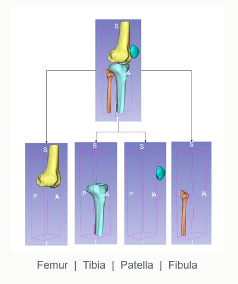
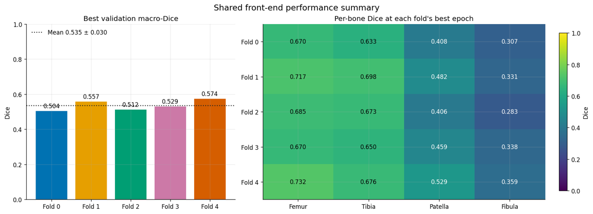
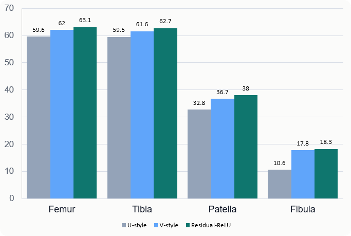
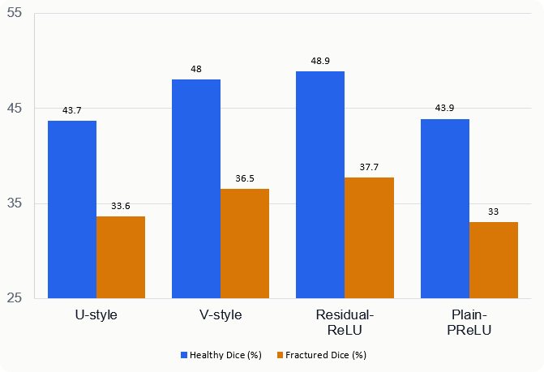

Complementary, not complete
AP and lateral views reveal different structures, but depth remains underdetermined and several 3D anatomies can produce similar projections.
A controlled comparison of U-Net-style and V-Net-style decoder blocks

AP and lateral views reveal different structures, but depth remains underdetermined and several 3D anatomies can produce similar projections.
CT resolves fragments and articular geometry, but adds radiation, cost, infrastructure and segmentation work.
Provide additional 3D information from common radiographs as an experimental adjunct—not replace CT in complex trauma.
Prior systems reconstruct bone from one or two radiographs using voxel, registration, transformer and implicit methods.
Anatomy, datasets, geometry, capacity, preprocessing and evaluation protocols differ across studies.
High Dice can coexist with clinically important landmark or surface error; subgroup averages can hide failure.
No controlled 2×2 study isolates residual topology and activation while holding the upstream pathway fixed.
Verify geometry, laterality and subject-level separation.
Hold encoder, fusion and 2D→3D lifting constant.
Use Dice and ASSD with bone and cohort analysis.
Evaluate four decoder arms over five grouped folds.
Every fold contains healthy and fractured anatomy, while bilateral knees remain together.
Healthy and fractured cases come from different datasets, so pathology remains confounded with acquisition domain.

3D Slicer labels the complete anatomy; TotalSegmentator accelerates the initial segmentation.
Apply 2–3 mm Gaussian smoothing, then export one STL surface per bone.
Transform every STL into the same LPS-aligned 200 mm, 256³ four-channel grid.
Paired DRRs drive reconstruction; masks provide per-bone Dice and ASSD references.
Order slices using physical coordinates—not filenames.
Separate bilateral anatomy and verify chirality.
LPS canonicalization, fixed physical crop and resampling.
Femur, tibia, patella and fibula in fixed channel order.
Generate paired 256×256 AP/LAT projections.
Use ImagePositionPatient to reconstruct physical order across DICOM folders.
Verify bone-centroid relationships and source-to-target chirality.
Group bilateral knees before all fold-specific learning and evaluation.

Exclude test subjects from encoder, fusion and decoder optimisation.
Use the same front-end hash, initial state, loss, optimiser, seed and schedule.
20 runs → 71 knees per arm → 43 subject-level comparisons.
The encoder sees an AP or lateral DRR as a 256 × 256 image—without a bone mask or 3D answer.
A uniform 8 × 8 grid supplies 64 patches; 38 are masked for each training example.
ConvNeXt preserves fine edges in large feature maps and gathers broader context in smaller maps.
Learning missing radiographic structure adapts the encoder to this image domain without using anatomy labels.
AP and lateral images contain complementary evidence about the same anatomy.
Training runs in both directions: AP from lateral evidence and lateral from AP evidence.
At the final 8 × 8 grid, attention is allowed only within the same or one adjacent superior–inferior patch row.
The two views become related representations, but the four-bone occupancy target is still withheld.
The visualization shows RMS activation energy across channels—an honest summary, not a selected “interesting” channel.
The 64² and 32² maps use local fusion, supporting edges and smaller anatomical structures.
The 16² and 8² maps use cross-attention so distant AP and lateral evidence can interact.
Trainable 1 × 1 convolutions convert the four levels to 64, 128, 256 and 512 channels.
The lateral map is flipped to match the standardized LPS orientation.
The code permutes, inserts a new dimension and expands the feature map into a cube.
A 3 × 3 × 3 convolution mixes the complementary AP and lateral evidence at every scale.
The current lift assumes Cartesian replication and receives no source position, detector spacing or projection matrix.
The smallest feature volume carries the widest contextual view of the knee.
Transposed convolution doubles spatial resolution; concatenation restores scale-specific evidence.
Each stage combines the growing volume with a finer lifted feature level.
One channel is produced for each bone before a shared trilinear upsample to 256³.
Sigmoid probabilities above 0.5 form the final femur, tibia, patella and fibula prediction.
The encoder, fusion, lifting, decoder widths and training conditions remain fixed.
Group normalization and the chosen ReLU or PReLU activation are applied in the same skeleton.
A 1 × 1 × 1 projection aligns channel width, allowing the original coarse signal to bypass refinement.
This is the topology change isolated by the 2 × 2 experiment on the next slide.

Femur 0.732 · Tibia 0.676
Patella 0.529 · Fibula 0.359
The same size-dependent hierarchy later appears in every decoder—evidence of a pipeline-level limit, not a decoder-only defect.
Residual decoding adds approximately 2.1% more decoder parameters; training remained about 37.5–38.3 minutes per run.
Topology—not PReLU—explained the advantage.
Residual-ReLU ranked first overall.
P2 pairing margin was 0.000079, only 5/9 subjects were positive, and feature retrieval and dimensionality were poorer. Every decoder therefore reached its lowest Dice.
Removing Fold 4 changed the residual Dice gain only from about 0.044 to 0.043, so the decoder ordering remained robust.

A substantial error reduction is not the same as accurate reconstruction. The small-bone ceiling persists.

+0.041 Dice · −3.28 mm ASSD
Fracture status is confounded with dataset and scanner domain. This is a cohort difference, not a causal fracture effect.
One residual-decoder case produced an empty patella prediction. The failure was retained—not averaged away.
SimCLR plus joint training improved aggregate Dice, but the healthy–fractured gap widened. Better averages did not mean safer pathology generalisation.
The reference volume contains all four bones, including the small patella and fibula.
The V-style decoder recovers the large-bone structure but does not produce a patella component at the 0.5 threshold.
Solid surfaces are the prediction; neutral wireframes show where the target continues beyond it.
The absent green prediction is data-authentic—not an invented intermediate shape.
Two projections collapse depth; the deepest map is only 8 × 8; Cartesian lifting differs from divergent DRR rays; logits are refined at 128³; fractured examples are limited.
Best defensible claim: residual decoding uses the available 3D features more effectively, while absolute and fracture-specific performance remain limited.